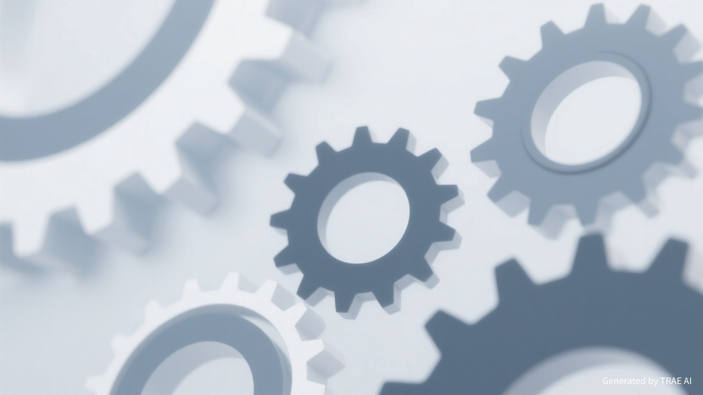

随着大模型能力的极大提升，AI 已经从编程扩展到各个领域。今天，我们正式推出 SOLO 独立版。
当时认为 Builder 只是吸引尝鲜，Tab Tab 才是过日子的惊喜感。虽然知道未来是 Agent（自主理解、调用工具、完成任务），但觉得这一天还很远。
用 Agent 做长时间异步并行、在严肃场景中深度使用已成共识。比如社区 Expert 全年用 Agent 写了 30 万行代码，但只 Tab Tab 了 12 次。直接进入了第三阶段。
在前线看到了什么？我们把自己作为最佳实践，吃自己的狗粮。
我们将团队的“隐性知识”沉淀为 AI 能读懂的 Skill 文件。那些只存在老员工脑子里的模块设计取舍、隐性耦合，现在变成了 AI 可以准确执行的标准。
AI 让写代码快了一个数量级，但产出量大了，Review 成为瓶颈。上下游衔接成本上升，交付周期并未同比例缩短。

基于一线的实践经验，我们看到了 AI Coding 正在发生的质变。
从需求分析、交互设计、编码研发，到质量保障、线上运维。整条链路上的角色都在从中受益，不再只是程序员的专属。
技术调研、写设计文档、整理会议纪要，甚至管理本地知识库。AI 的价值远不止于写代码。这也是 SOLO 提供 Work 模式的原因。
过去你是 In the Loop，每一行代码都经过你的手；现在你要学会 On the Loop，设定约束、委派任务、审查结果。
不是取代工程师，而是让每个工程师都能站在更高的抽象层次上思考和创造。